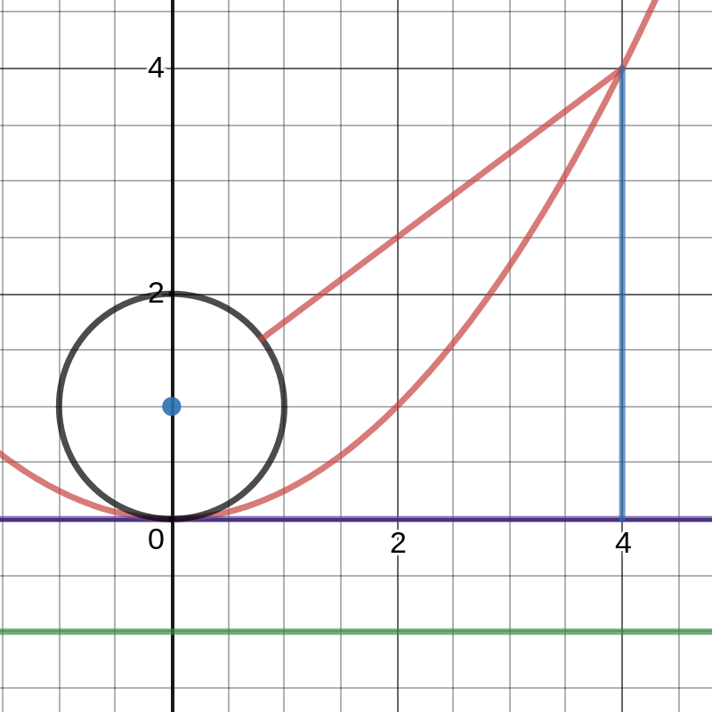
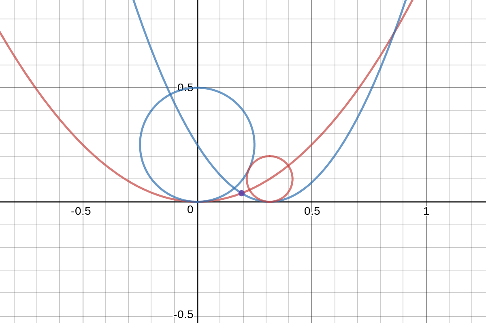

A few notes on circles and tangents¶
I have been very slowly making my way through Paul Lockhart's "Measurement". It is a fantastic book, and I highly recommend it for anyone who enjoys math as a hobby or pastime. One of the questions posed is to find the radius of the smaller, nested circle given the radius of the two larger circles (all tangent to each other and the line below them).
 Wikipedia
Wikipedia
I struggled with this problem for much longer than I care to admit, and I struggled with whether or not to even write this post. I'm not terribly clever with writing, or math for that matter, but I hope others who are slogging their way through work or school will find a bit of encouragment by the end.
Lessons learned¶
The internet is at most of our fingertips, and it is much too easy to search for the answers to all of our questions. I think much of my own personal struggle in mathematics has been due to the fact that I am lazy. It's true. I'd much rather watch Mathologer perform magic in front of my eyes than actually do math. However, just like exercising, finding my way to the end usually provides the motivation to continue the next time around. I hope through continued practice and discovery that I will build up the skills and tools to make this a little less painful as I attempt other problems. Think of watching Danny MacAskill doing amazing tricks on his bicycle. What we don't see are the endless hours of practice, and repeated failure that led to amazing moments. This is true of every profession, but I seem to need to remind myself of it daily!
Two circles tangent to a line¶
The way I attacked this problem may be the most naive thing you have ever seen, but I made some personal discoveries along the way that I haven't seen in the textbooks at my disposal. Let's start with two circles tangent to each other and a horizontal line. Grab a piece of scrap paper and draw a few examples. Fix the radius of one circle, and vary the radius of the other. I have a stencil with various sizes of circles on it. I found it much easier to use for this problem than simply relying on a compass. The traditional approach to this problem is to use triangles and a few applications of the Pythagorean theorum. Don't forget my disclaimer about a naive approach!
Do you notice a pattern drawn by the centers of the tangential circles? They follow a quadratic curve (parabola) away from the fixed circle. After a little poking around in an algebra book, I quickly realized that given a fixed circle, the centers of the tangential circles all lie on a parabola where the fixed circle sits at the focus! Check out the Desmos link below for a demo.
Two circles tangent to one another
Move the slider around to see what happens.
If we think about the definition of a parabola, this pattern makes sense. The vertex sits midway between the focus and the directrix. The directrix is a fixed line, and a "shortest line" between a point on the parabola and the directrix always hits the directrix at a 90-degree angle. The focus is a different case as it is a fixed point, not a line. This means a "shortest line" from the focus to a point on the parabola is a matter of connecting the dots at whatever angle they make.
What if we identify all the "fixed" parts of this setup? The distance between the focus and the vertex is the same as the distance between the vertex and the directrix. If we draw a line through the vertex parallel to the directrix, we've identified all the points this fixed distance from the directrix. What about the focus? Let's do the same thing. All the points at this fixed distance around the focus forms a circle lying in the "cup" of the parabola... and tangent to it. You should be noticing the same pattern here that we saw earlier. The reason is pretty neat (at least to my pea brain). By identifying a set of fixed points, we are left with the difference between the circle around the focus and the line through the vertex - and tangent to both!

Let's use the previous image as an example. I have identified all of our "fixed points" (the black circle around the focus and the purple line along the x-axis) that are the focal distance from either the focus or the directrix. If we consider the point (4, 4), it's "shortest line" to the directrix is straight down and interesecting the directrix at a perpedicular angle. It is also a distance of 4 from the purple line through the vertex (and a distance of 5 to the directrix). What about the "shortest line" between the focus (0, 1) and (4, 4)? Well, the horizontal distance is 4, and the vertical distance is 3. This makes a 3-4-5 triangle, so it is 5 units away from the focus. That means it is also only 4 units from the circle around the focus. This means we can sweep a line of length 4 around the point (4, 4) and get a circle that intersects both the circle around the focus and the line through the vertex. Cool, right?!
To solve this problem I noticed that what is true for one circle is also true for the other. The nested, inner cicle lies at the intersection of the parabolas formed by the two bigger circles. The algebra gets a little messy since you have to locate one of the parabolas in terms of the other, but the math does work out. I'm going to present an interactive example instead of a mess of LaTex since the geometry is really the point of this post.
The solution

Move the slider to see the solution adjust to changing conditions.
Why does it matter?¶
It really doesn't at the end of the day, but I learned something from it even if it was a really long-winded way around to a much simpler problem. It got me to poking around with parabolas quite a bit even though that wasn't even the point of the question... or was it? That is the beauty of mathematics to me. The breadth of material is vast to say the least, but interconnected in interesting and beautiful ways!